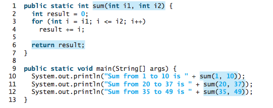
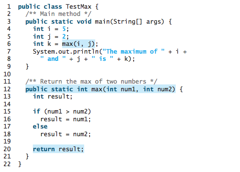
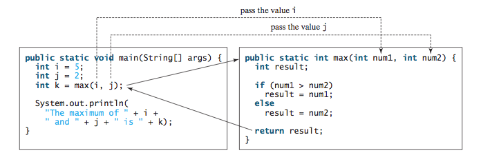
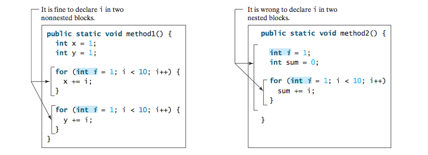

CS201: Introduction to Programming
Lecture 06 / Methods
Reading assignment: chapter 6
Lesson Objectives
- To define methods with formal parameters
- To invoke methods with actual parameters (i.e., arguments)
- To define methods with a return value
- To define methods without a return value
- To pass arguments by value
- To develop reusable code that is modular, easy to read, easy to debug, and easy to maintain
- To use method overloading and understand ambiguous overloading
- To determine the scope of variables
- To apply the concept of method abstraction in software development
- To design and implement methods using stepwise refinement
Introduction
Purpose of methods: Methods can be used to define reusable code and organize and simplify coding.

modifier returnValueType methodName(list of parameters) {
// Method body;
}
When a program calls a method, program control is transferred to the called method. A called method returns control to the caller when its return statement is executed or when its method-ending closing brace is reached.
Consider the following method for computing the max (larger) of two numbers.
When the max method is invoked, the flow of control transfers to it. Once the max method is finished, it returns control back to the caller.
What's happening underneath the hood?
- Each time a method is called, the JVM creates an activation frame or record that takes a "snapshot" of the states of the variables
- This data frame is push onto a stack
- If another method is invoked another frame is created and again pushed on to the stack
- When the program returns from a method, the frame is popped off the stack and data is "restored"
The void Method
The so-called void method does not return anything. Purpose: do something but but "result" is not needed. In practice, people do abuse the void method by passing values by reference (more on this in CS202).
Passing arguments
There are two ways to passing arguments to a method:
- Passing by values
- Passing by reference (more on this in CS202)
Passing by Value
Consider the following code:
public class SwapNumber {
public static void main(String[] args) {
int a = 2;
int b = 3;
System.out.printf("a = %d, b = %d\n", a, b);
Swap(a,b);
System.out.printf("a = %d, b = %d\n", a, b);
}
public static void Swap(int x, int y) {
int temp = x;
x = y;
y = temp;
}
}
What does the output look like?
Modularization
Modularizing makes the code easy to maintain and debug and enables the code to be reused. Methods can be used to reduce redundant code and enable code reuse. Methods can also be used to modularize code and improve the quality of the program.
Let's write the code to find the greatest commond divisor:
public class GCD {
public static int gcd(int n1, int n2) {
int gcd = 1;
int k = 2;
while (k <= n1 && k <= n2) {
if (n1 % k == 0 && n2 % k == 0) {
gcd = k;
}
}
return gcd;
}
}
Benefits of encapsulating GCD as a reusable task:
- It isolates the problem for computing the gcd from the rest of the code in the main method. Thus, the logic becomes clear and the program is easier to read.
- The errors on computing the gcd are confined in the gcd method, which narrows the scope of debugging.
- The gcd method now can be reused by other programs.
Overloading
Overloading methods enables you to define the methods with the same name as long as their signatures are different. Let's modify the max method:
public class Max {
public static double max(double n1, double n2) {
return (n1 > h2 ? n1 : n2);
}
public static int max(int n1, int n2) {
return (n1 > h2 ? n1 : n2);
}
}
This is called overloading because max(...) can execute either of the two methods depending, of course, on the parameter type.
Sometimes there are two or more possible matches for the invocation of a method, but the compiler cannot determine the best match. This is referred to as ambiguous invocation. Ambiguous invocation causes a compile error. Consider the following code:
public class AmbiguousOverloading {
public static void main(String[] args) {
System.out.println(max(1, 2));
}
public static double max(int num1, double num2) {
if (num1 > num2)
return num1;
else
return num2;
}
public static double max(double num1, int num2) {
if (num1 > num2)
return num1;
else
return num2;
}
}
Scope of Variables
The scope of a variable is the part of the program where the variable can be referenced. To put it differently, "scope" is where the variable exists.
Lab Exercises
For each of the following exercises, practice developing and running your program with Eclispe. Note that the lab assignments are not graded.
- Modify our earlier program to test for palindrome by using methods.
- Update the homework assignment by breaking down the program into smaller chunks.
- Write a java program with "intelligent" overloading methods that can understands the differences between adding "1.0" + "2.0" and 1.0 + 2.0